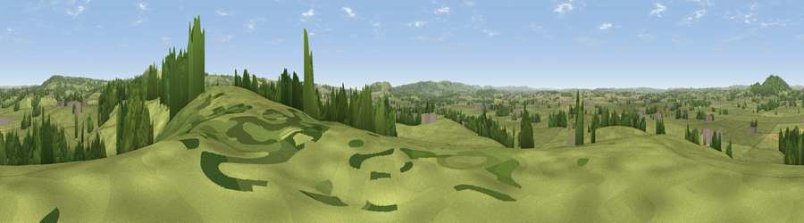

Viewpoint near Margaret Marsh
#26439 in England · top 45% of its area beats it · near Margaret Marsh · path 99 mWhere it is
The exact computed spot (ST 83725 18275). Click the marker for map links.
Public access: the nearest public right of way is about 99 m away — the final stretch may cross private land. Computed from Natural England's CRoW access layer and OpenStreetMap rights of way — not the legal definitive map. Always verify locally.
The view, rendered

A 360° render of this exact spot computed from the terrain model, tree cover and land cover — summer colours, afternoon light, calibrated against photographs of famous viewpoints. Real trees, hedges and buildings will differ in detail.
The panorama
Grey silhouette: terrain skyline in each direction (720 bearings, Earth curvature and refraction included). Dashed green: skyline with trees (+15 m) and buildings (+8 m) as obstacles. Blue strip: how far the ground is visible on each bearing.
Where the view opens
Wedge length = distance to the farthest visible ground on that bearing (vegetation-aware). Rings at 10, 25 and 50 km.
What fills the view
79% grassland · 12% woodland · 7% cropland · 1% built-up
Angular shares of the visible panorama (visual magnitude), not map area. Landscape diversity 0.30 (0–1 Shannon).
Key numbers
More beautiful places nearby
The staircase of upgrades: each row has a higher view potential than everything closer. Driving times are estimates from straight-line distance, calibrated against real road routing — check an actual route before setting out.
| Place | Direction | Drive | Score |
|---|---|---|---|
| Viewpoint near Compton Abbas | E · 4 km | ~9 min | 62.4 |
| Melbury Hill | ENE · 4 km | ~9 min | 72.5 |
| Viewpoint near Child Okeford | S · 5 km | ~12 min | 72.8 |
| Hambledon Hill | S · 6 km | ~12 min | 74.6 |
| Viewpoint near Berwick St John | ENE · 9 km | ~18 min | 78.2 |
| East Hill | SSW · 36 km | ~54 min | 79.6 |
| Viewpoint near Sutton Poyntz | SSW · 37 km | ~55 min | 79.9 |
| Viewpoint near Owermoigne | SSW · 37 km | ~56 min | 81.0 |
50.96366, -2.23312 · source: screening · position refined by local search. Computed location — check access rights before visiting.